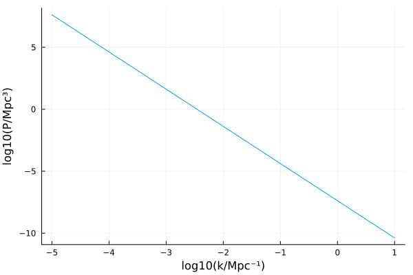
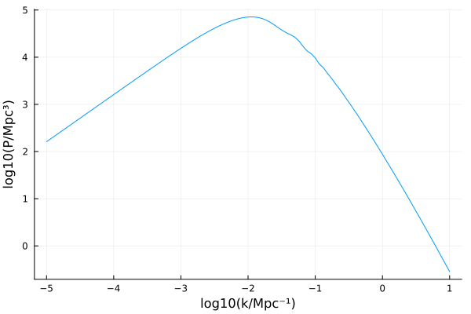
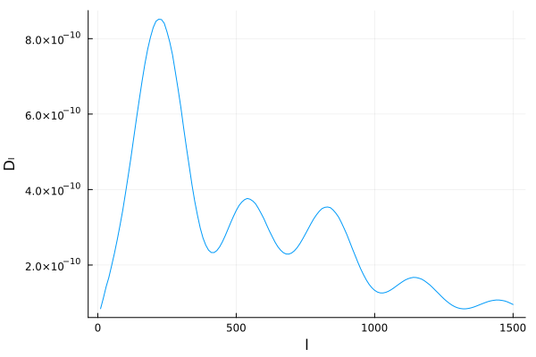

Spectra
Primordial power spectra
SymBoltz.P0 — FunctionP0(k; As=2e-9)Compute the primordial power spectrum with amplitude As at the wavenumber(s) k.
Example
# TODO: create InflationModel or something
using SymBoltz, Unitful, UnitfulAstro, Plots
ks = 10 .^ range(-5, +1, length=100) / u"Mpc"
Ps = SymBoltz.P0(ks; As = 2.1e-9)
plot(log10.(ks*u"Mpc"), log10.(Ps/u"Mpc^3"); xlabel = "log10(k/Mpc⁻¹)", ylabel = "log10(P/Mpc³)")
Matter power spectra
SymBoltz.power_spectrum — Functionpower_spectrum(sol::CosmologySolution, k)Compute the matter power spectrum from the cosmology solution sol at wavenumber(s) k.
power_spectrum(M::CosmologyModel, pars, k; solver = KenCarp4(), kwargs...)Compute the matter power spectrum from the cosmological model M with parameter pars at wavenumber(s) k. The solver and other kwargs are passed to solve.
Example
using SymBoltz, Unitful, UnitfulAstro, Plots
M = SymBoltz.ΛCDM()
pars = SymBoltz.parameters_Planck18(M)
ks = 10 .^ range(-5, +1, length=100) / u"Mpc"
Ps = SymBoltz.power_spectrum(M, pars, ks)
plot(log10.(ks*u"Mpc"), log10.(Ps/u"Mpc^3"); xlabel = "log10(k/Mpc⁻¹)", ylabel = "log10(P/Mpc³)")
CMB power spectra
SymBoltz.Cl — FunctionCl(M::CosmologyModel, pars::Dict, ls::AbstractArray; kwargs...)Compute the $C_l$'s of the CMB power spectrum from the cosmological model M with parameters pars at angular wavenumbers ls.
Example
using SymBoltz, Unitful, UnitfulAstro, Plots
M = SymBoltz.ΛCDM()
pars = SymBoltz.parameters_Planck18(M)
ls = 10:10:1500
Cls = SymBoltz.Cl(M, pars, ls)
Dls = SymBoltz.Dl(Cls, ls)
plot(ls, Dls; xlabel = "l", ylabel = "Dₗ")